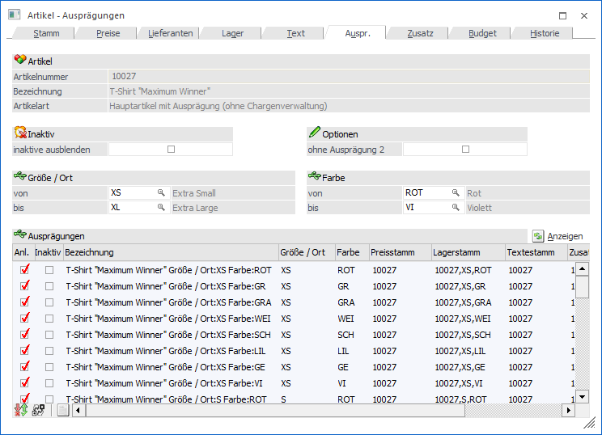
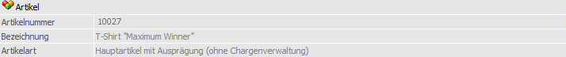
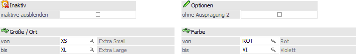
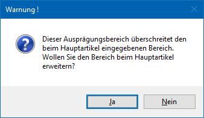
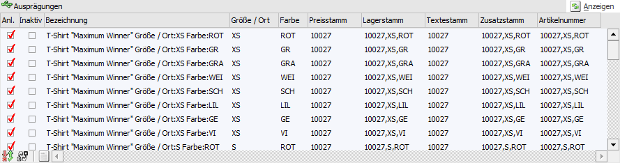
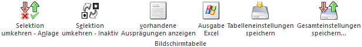

Bei der Artikel - Anlage (nähere Informationen entnehmen Sie bitte dem Kapitel "Artikel - Anlage") wird definiert, ob es sich um
ü einen Hauptartikel ohne Ausprägung
ü einen Hauptartikel mit Ausprägung
ü einen Ausprägungsartikel
handelt. Bei Hauptartikel mit Ausprägung muss in diesem Register definiert werden, ob und welche Ausprägungen angelegt werden sollen.

Folgende Eingabefelder, Einstellungen und Informationen stehen zur Verfügung:
Artikel

Ø Artikelnummer
An dieser Stelle wird die Artikelnummer des ausgewählten Artikels angezeigt.
Ø Bezeichnung
Hier wird die Bezeichnung des aktuell gewählten Artikels dargestellt.
Ø Artikelart
An dieser Stelle wird die Art des Artikels ausgewiesen, d.h. ob es sich z.B. um einen Artikel mit oder ohne Ausprägungen handelt.
Ø Lagerführung
Handelt es sich bei dem Artikel um einen Artikel, welcher in 2 Mengen geführt wird, so wird neben der Artikelart die statische Information "Lagerführung in 2 Mengen" angezeigt.
Selektion

Zunächst kann im oberen Bereich des Registers eine Selektion für die Ausprägungstabelle vorgenommen werden.
Ø inaktive ausblenden
Wenn diese Option aktiviert wird, werden nur aktive Ausprägungen in der Tabelle "Ausprägungen" angezeigt.
Hinweis
Die Einstellung wird benutzerspezifisch gespeichert und auch im Artikelstamm mit individuellem Formular berücksichtigt, wenn die Tabelle "Ausprägungen" in der Vorlage vorhanden ist.
Ø ohne Ausprägung 2
Mit der Option "ohne Ausprägung 2" kann nur die Ausprägung 1 der Artikel angelegt werden, da alle Ausprägungsvarianten mit Ausprägung 2 nicht in der Ausprägungstabelle angezeigt werden. Wenn ein Artikel z.B. mit Ausprägung 1 "Farben" und Ausprägung 2 "Lagerorten" angelegt wurde, können mit dieser Option zunächst die Farben angelegt werden und erst später die Lagerorte dazu.
Ø Ausprägung 1 von / bis (hier "Größer / Ort")
An dieser Stelle kann die Ausprägung 1 selektiert werden.
Hinweis
Wenn Ausprägung eigegeben werden, welche den Bereich lt. Hauptartikel übersteigen, dann erscheint der folgende Hinweis.

Ø Ausprägung 2 von / bis (hier "Farbe")
An dieser Stelle kann die Ausprägung 2 selektiert werden.
Hinweis
Wenn Ausprägung eigegeben werden, welche den Bereich lt. Hauptartikel übersteigen, dann erscheint der folgende Hinweis.
Ø Anzeigen
Durch Anwahl des Buttons "Anzeigen" wird der Inhalt der Ausprägungstabelle gemäß der getroffenen Selektion neu aufgebaut.
Tabelle "Ausprägungen"

In der Tabelle werden alle möglichen Ausprägungsartikel (Kombinationen von Ausprägung 1 und 2) angezeigt, wobei die oben getroffene Selektion berücksichtigt wird. Hierbei wird nicht zwischen bereits angelegten und bestehenden Ausprägungen unterschieden.
Ø Anl.
Durch Setzen des Häkchens in der Spalte "Anl." (Anlage) kann entschieden werden, ob die Ausprägung tatsächlich angelegt werden soll.
Wenn Ausprägungen vorerst nicht angelegt werden sollen (weil es den Artikel auf dem Lagerort z.B. nicht gibt), dann keine eine spätere Anlage jederzeit in diesem Register "stattfinden.
Ø Inaktiv
Durch Setzen des Häkchens in dieser Spalte können bestehende Ausprägungen auf inaktiv gesetzt werden (z.B. Seriennummernartikel die bereits wieder ausgebucht wurden).
Ø Bezeichnung
Hier wird die Bezeichnung für den Ausprägungsartikel vorgeschlagen und kann editiert werden. Aus welchen Variablen sich der Vorschlag zusammensetzt, kann im "Ausprägungen initialisieren" (WinLine FAKT - Ausprägungen - Ausprägungen initialisieren - Register "Anlage") definiert werden (nähere Informationen entnehmen Sie bitte dem Kapitel Ausprägungen initialisieren).
Ø Ausprägung 1 (hier "Größer / Ort") / Ausprägung 2 (hier "Farbe")
In diesen beiden Spalten wird die Ausprägung angezeigt, die auch noch editiert werden kann. Sollte hier eine neue Ausprägung ausgewählt werden, so muss diese zu der hinterlegten Ausprägungsgruppe zugeordnet sein.
Ø Preisstamm / Lagerstamm / Textstamm / Zusatzstamm
In der WinLine FAKT werden die Ausprägungen als eigenständige Artikel angelegt, welche über bestimmte Stammdatenbereiche mit dem Hauptartikel verknüpft sind. Im "Ausprägungen initialisieren" (WinLine FAKT - Ausprägungen - Ausprägungen initialisieren - Register "Anlage") wird definiert, ob die einzelnen Ausprägungen einen eigenen
ü Lagerstamm
ü Preisstamm
ü Textstamm
ü Zusatzfelderstamm
haben sollen (nähere Informationen entnehmen Sie bitte dem Kapitel Ausprägungen initialisieren). Diese Einstellung kann jederzeit an dieser Stelle editiert werden, wobei hier nur ein Verweis auf bereits vorhandene Stammdaten eingetragen werden kann. Stammsätze, welche bei der Erstanlage des Artikels nicht angelegt wurden, können im Nachhinein hier auch nicht mehr erzeugt werden!
Achtung
Wird die Verknüpfung einer bereits bebuchten Ausprägung editiert, muss auch der Lagerstamm der editierten Ausprägung umgebucht werden, z.B. ein Lagerort wird aufgelöst.
Hinweis
Verweist ein Artikel im Lagerstamm auf einen anderen Artikel, so wird in Statistikauswertungen immer jener Artikel angezeigt, auf den im Lagerstamm verwiesen wird!
Ø Artikelnummer
Standardmäßig erhalten die Ausprägungsartikel die Artikelnummer des Hauptartikels + einen fortlaufenden Zähler. Diese Nummer wird hier vorgeschlagen und kann editiert werden.
Tabellenbuttons

Ø Selektion umkehren - Anlage
Die getroffene Einstellung in der Tabellenspalte "Anl." wird getauscht.
Ø Selektion umkehren - Inaktiv
Die getroffene Einstellung in der Tabellenspalte "Inaktiv" wird getauscht.
Ø vorhandene Ausprägungen anzeigen
Über den Button "vorhandene Ausprägungen anzeigen" werden in der Ausprägungstabelle nur die bereits angelegten Ausprägungen angezeigt.
Ø Ausgabe Excel
Durch Anwahl des Buttons "Ausgabe Excel" wird der Inhalt der Tabelle nach Microsoft Excel übergeben.
Ø Tabelleneinstellungen speichern
Die Spalten einer Tabelle können grundsätzlich an beliebige Positionen verschoben, bzw. in der Breite entsprechend angepasst werden. Durch Anwahl des Buttons "Tabelleneinstellungen speichern" werden die Einstellungen benutzerspezifisch gespeichert und bei dem nächsten Aufruf des Programmpunktes wieder vorgeschlagen.
Ø Gesamteinstellungen speichern
Im Gegensatz zu "Tabelleneinstellungen speichern" können mit "Gesamteinstellungen speichern" mehrere Tabellenaufbauten gespeichert und nach Wunsch geladen werden. Zusätzlich werden Sonderfunktionen der Tabelle (z.B. "Spalte gruppieren") ebenfalls bei der Speicherung bedacht.